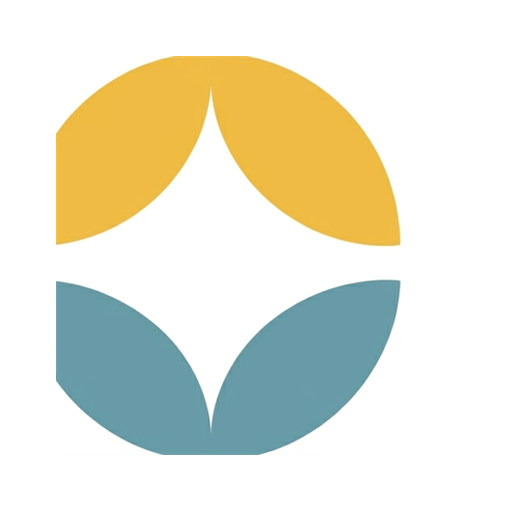

Configuration du poste de travail
Connectez ce poste à votre serveur. À la première connexion, les données de votre site sont synchronisées localement — l’application fonctionne ensuite même hors‑ligne et se resynchronise dès que le serveur est joignable.
Utilisez vos identifiants du serveur central (les mêmes que sur le site web). L’adresse et la connexion sont mémorisées de façon sécurisée sur ce poste.